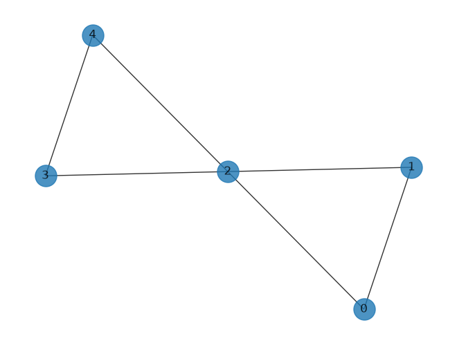
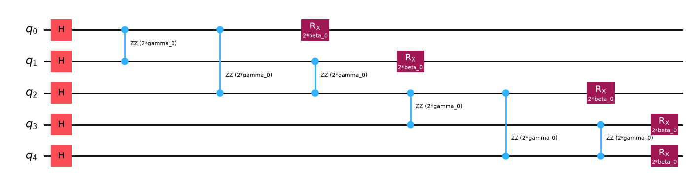
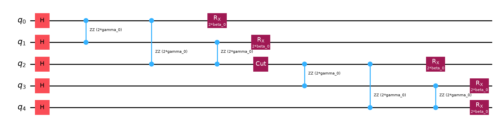
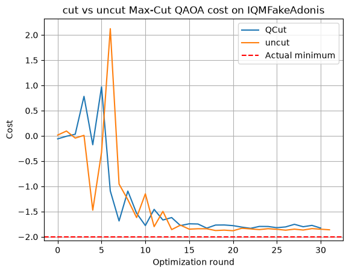
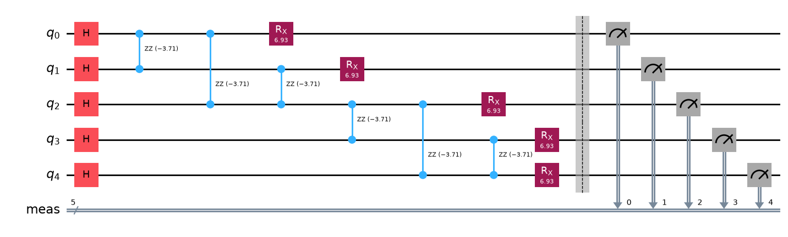
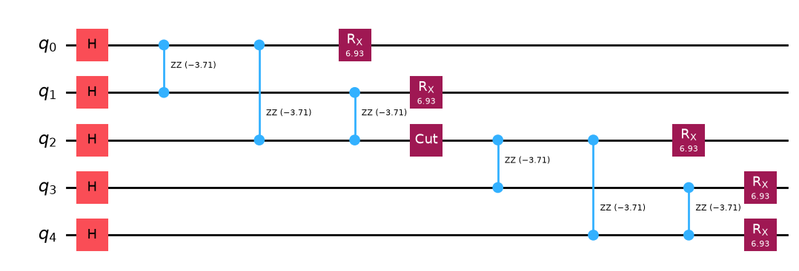
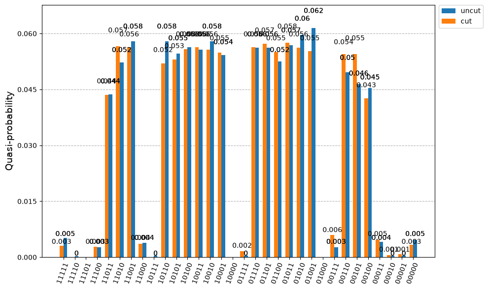

QAOA Example#
import matplotlib.pyplot as plt
import networkx as nx
import numpy as np
from iqm.qiskit_iqm import IQMFakeAdonis
from qiskit import QuantumCircuit, transpile
from qiskit.circuit import Parameter
from qiskit.primitives import BackendEstimatorV2 as BackendEstimator
from qiskit.quantum_info import PauliList, SparsePauliOp
from qiskit_aer import AerSimulator
from scipy.optimize import minimize
import QCut as ck
from QCut import cut
/home/nivalajo/work/QCut/.venv/lib/python3.12/site-packages/tqdm/auto.py:21: TqdmWarning: IProgress not found. Please update jupyter and ipywidgets. See https://ipywidgets.readthedocs.io/en/stable/user_install.html
from .autonotebook import tqdm as notebook_tqdm
edges = [(0, 1), (1, 2), (2, 0), (2, 3), (2, 4), (3, 4)]
G = nx.Graph(edges)
nx.draw(G, with_labels=True, alpha=0.8, node_size=500)

reformattedHamiltonian = {
"paulis": PauliList(["IIIZZ", "IIZIZ", "IIZZI", "IZZII", "ZIZII", "ZZIII"]),
"coefs": [1.0, 1.0, 1.0, 1.0, 1.0, 1.0],
"const": 0.0,
}
nqubits = 5
observables = SparsePauliOp(
reformattedHamiltonian["paulis"], reformattedHamiltonian["coefs"]
)
def create_cut_qaoa_circ(n_layers):
beta = [Parameter(f"beta_{i}") for i in range(n_layers)]
gamma = [Parameter(f"gamma_{i}") for i in range(n_layers)]
# create actual circuit object
qc = QuantumCircuit(nqubits)
# entagling layer
for i in range(nqubits):
qc.h(i)
for layer_index in range(n_layers):
# cost layer
count = 0
for i, j in G.edges():
qc.rzz(2 * gamma[layer_index], i, j)
if count == 2:
qc.append(cut(), [max(i, j)])
count += 1
# mixing layer
for i in range(nqubits):
qc.rx(2 * beta[layer_index], i)
return qc
def create_qaoa_circ(n_layers):
beta = [Parameter(f"beta_{i}") for i in range(n_layers)]
gamma = [Parameter(f"gamma_{i}") for i in range(n_layers)]
# create actual circuit object
qc = QuantumCircuit(nqubits)
# entagling layer
for i in range(nqubits):
qc.h(i)
for layer_index in range(n_layers):
# cost layer
for i, j in G.edges():
qc.rzz(2 * gamma[layer_index], i, j)
# mixing layer
for i in range(nqubits):
qc.rx(2 * beta[layer_index], i)
return qc
qc = create_qaoa_circ(1)
qc.draw("mpl")

qca = create_cut_qaoa_circ(1)
qca.draw("mpl")

backend = IQMFakeAdonis()
sim = AerSimulator()
cut_circuit = ck.get_locations_and_subcircuits(qca)
transpiled = ck.transpile_circuits(cut_circuit, backend, optimization_level=3)
cut_experiment = ck.get_experiment_circuits(transpiled, observables)
tr_qc = transpile(qc, backend, optimization_level=3)
tr_obs = observables.apply_layout(tr_qc.layout)
def get_expectation_backend(circuit, hamiltonian, observables, backend):
exps_uncut = np.empty(0)
def execute_circ(theta):
params = {}
n_layers = len(theta) // 2 # number of alternating unitaries
for i in range(n_layers):
params[f"beta_{i}"] = theta[i]
params[f"gamma_{i}"] = theta[i + n_layers]
p_circuit = circuit.assign_parameters(params, inplace=False)
fake_estimator = BackendEstimator(backend=backend)
exps = [
e.data.evs
for e in fake_estimator.run(
[(x) for x in zip([p_circuit] * len([observables]), [observables])]
).result()
]
f = hamiltonian["const"] + sum(exps)
global exps_uncut
exps_uncut = np.append(exps_uncut, f)
return f
return execute_circ, exps_uncut
def get_expectation_cut(cut_experiment, hamiltonian, observables, backend):
exps_cut = np.empty(0) # store expectation value from each optimization step
# execute circuit and calculate expectation value
def execute_circ(theta):
params = {}
n_layers = len(theta) // 2 # number of alternating unitaries
for i in range(n_layers):
params[f"beta_{i}"] = theta[i]
params[f"gamma_{i}"] = theta[i + n_layers]
p_cut_experiment = cut_experiment.assign_parameters(params, inplace=False)
# run the experiments, apply the {0,1} -> [-1,1] post-processing function
results = ck.run_experiments(p_cut_experiment, shots=2**12, backend=backend)
reconstructed_expvals = ck.estimate_expectation_values(
results
)
# Calculate the hamiltonian expectation value
f = hamiltonian["const"]
for i, j in zip(reconstructed_expvals, hamiltonian["coefs"]):
f += i * j
global exps_cut
exps_cut = np.append(exps_cut, f)
return f
return execute_circ, exps_cut
initial_params = [np.pi, -np.pi]
expectation, exps_uncut = get_expectation_backend(
tr_qc, reformattedHamiltonian, tr_obs, sim
)
# minimize uncut qaoa cost using COBYLA
res_uncut = minimize(
expectation, initial_params, method="COBYLA", options={"maxiter": 100}
)
res_uncut
message: Return from COBYLA because the trust region radius reaches its lower bound.
success: True
status: 0
fun: -1.8798828125
x: [ 3.467e+00 -1.853e+00]
nfev: 32
maxcv: 0.0
expectation_cut, exps_cut = get_expectation_cut(
cut_experiment, reformattedHamiltonian, observables, sim
)
# minimize uncut qaoa cost using COBYLA
res_cut = minimize(
expectation_cut, initial_params, method="COBYLA", options={"maxiter": 100}
)
res_cut
message: Return from COBYLA because the trust region radius reaches its lower bound.
success: True
status: 0
fun: -1.8325386047363281
x: [ 2.780e+00 -2.894e+00]
nfev: 31
maxcv: 0.0
x = range(len(exps_cut))
x1 = range(len(exps_uncut))
plt.plot(x, exps_cut, label="QCut")
plt.plot(x1, exps_uncut, label="uncut")
plt.axhline(y=-2, color="r", linestyle="--", label="Actual minimum")
plt.xlabel("Optimization round")
plt.ylabel("Cost")
plt.title("cut vs uncut Max-Cut QAOA cost on IQMFakeAdonis")
plt.legend()
plt.grid(True)

uncut_solution_circuit = create_qaoa_circ(1).assign_parameters(
{
"beta_0": res_uncut.x[0],
"gamma_0": res_uncut.x[1],
}
)
uncut_solution_circuit.measure_all()
uncut_solution_circuit.draw("mpl")

cut_solution_circuit = create_cut_qaoa_circ(1).assign_parameters(
{
"beta_0": res_uncut.x[0],
"gamma_0": res_uncut.x[1],
}
)
cut_solution_circuit.draw("mpl")

uncut_counts = sim.run(uncut_solution_circuit, shots=2**12).result().get_counts()
cut_counts = ck.run(cut_solution_circuit, shots=2**12, backend=sim, qubits=[0, 1, 2, 3, 4]).counts()
from qiskit.visualization import plot_histogram
plot_histogram([uncut_counts, cut_counts], legend=["uncut", "cut"], figsize=(10, 6), sort="desc")

Only solution states have a high probability in both the cut and uncut cases